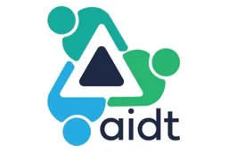
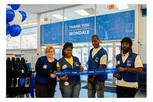
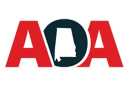

Cullman County 4-H, Alabama Cooperative Extension System
Jobs & Education in the Hanceville area
More in Jobs & Education

AIDT (Alabama Industrial Development Training)Jobs & Education
Alabama Goodwill IndustriesJobs & Education
Alabama Office of ApprenticeshipJobs & Education- AlabamaWorks Online Job Portal (state job board)Jobs & Education
- Automation Personnel Services, Cullman branchJobs & Education
- Big Brothers Big Sisters of the Tennessee Valley (BBBSTV)Jobs & Education
- Boys & Girls Clubs of North AlabamaJobs & Education
- Central Alabama Community Foundation, Fran Kay Schwaiger ScholarshipJobs & Education
- Cullman Area Technology Academy (CATA), Cullman County SchoolsJobs & Education
- CullmanJobs (Cullman Area Chamber of Commerce job board)Jobs & Education
- Express Employment Professionals, Decatur (nearest office; no Cullman office found)Jobs & Education
- Junior Achievement of AlabamaJobs & Education
Something out of date? Owners can request a correction by messaging our Facebook Page. Sources for this listing are on our Sources and References page.